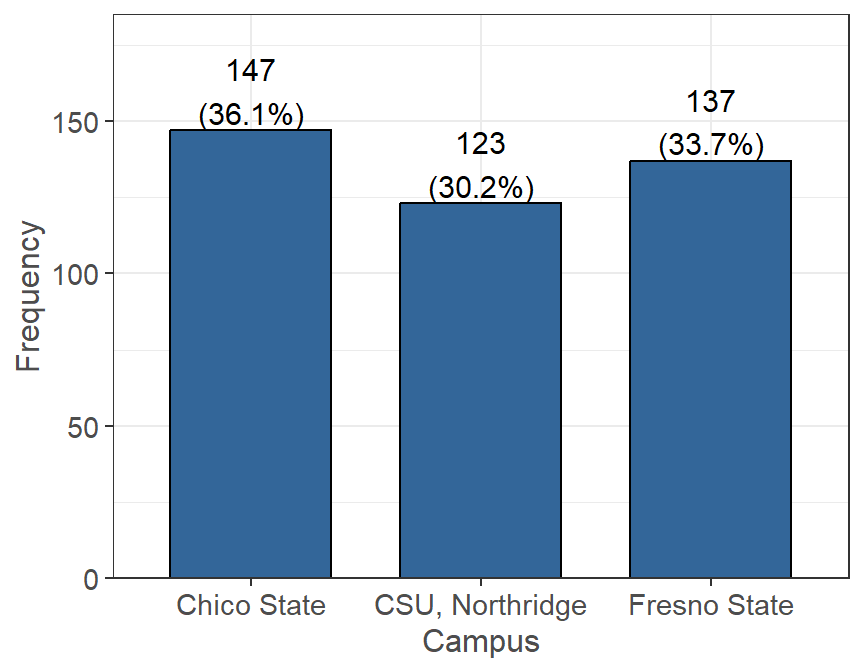
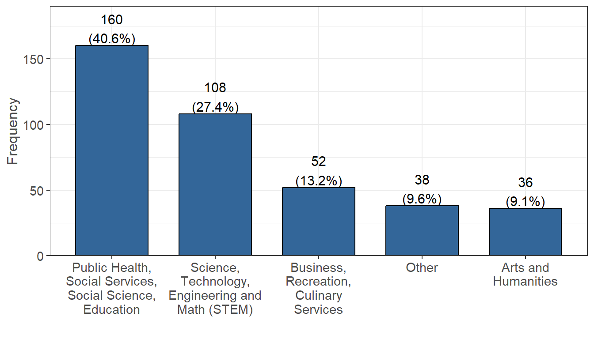
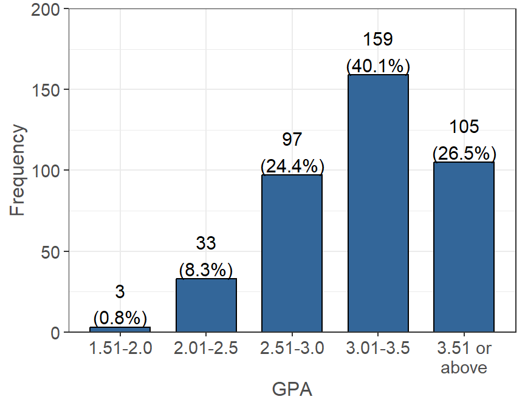
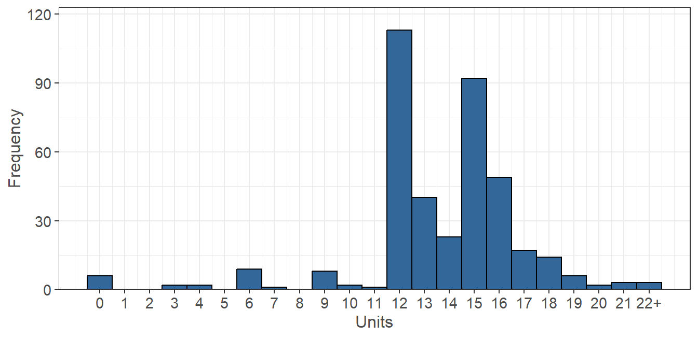
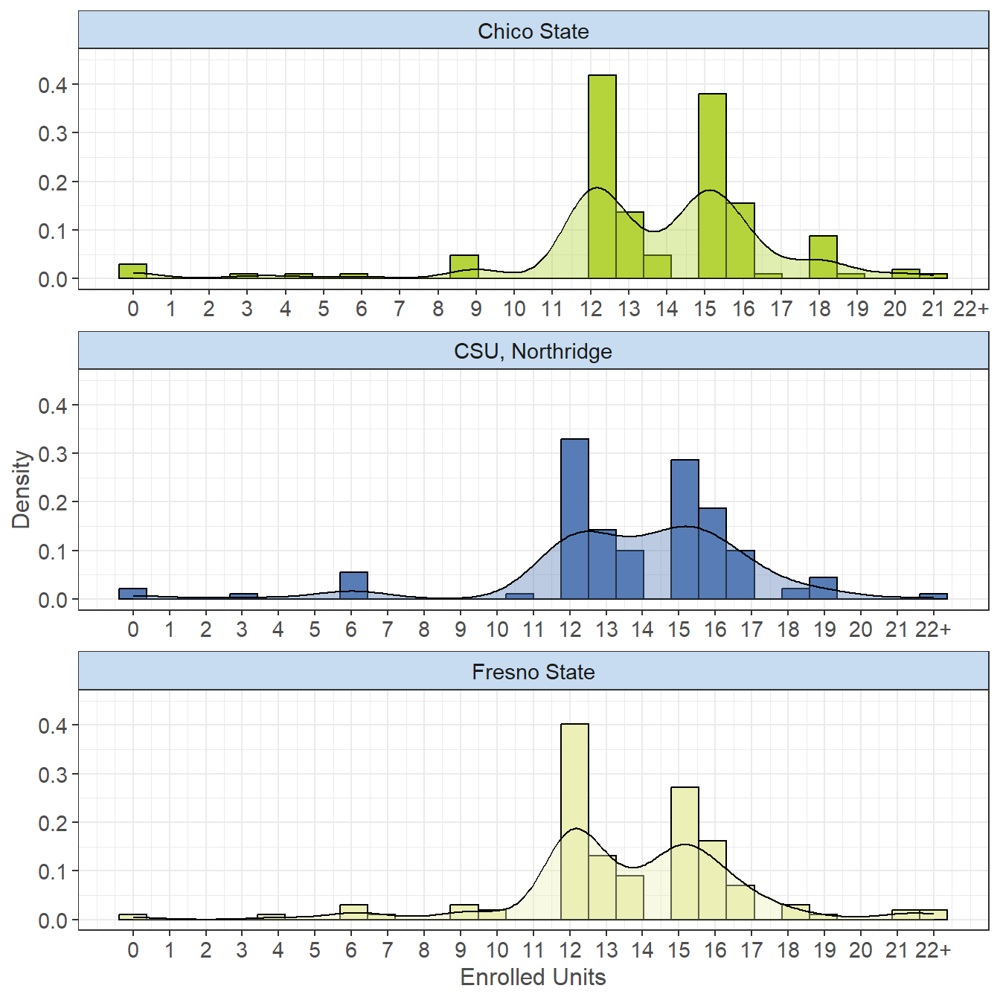

The following set of questions were asked in regards to the students’ academic demographic. This includes information such as what Cal State University they are currently enrolled in, their class standing, major, GPA, and enrolled units. They were also asked questions about programs they participate in as well as what type of student they are (transfer, international, etc.) to help identify students.
Which Cal State University are you currently enrolled in? (n=402, 100% of 402 reporting).

Figure 2.1: Current CSU Enrollment
Three campuses participated in this pilot of the survey: Chico State (145), Fresno State (134), and CSU, Northridge (123). The data indicates that students from each campus will be nearly equally represented in the data.
Estimate your class standing by units completed (n=382, 95% of 402 reporting).
Figure 2.2: Current Academic Level
As the survey was distributed mainly to students in either their junior or senior year, we can see that there are 135 junior’s and 247 senior’s.
What is your major? (n=381, 95% of 402 reporting).  Figure 2.3: Declaration of Major
NOTE: Science, Technology, Engineering and Math (STEM) was shortened for the figure above, but also includes the following majors: Medicine, Computer Science, Agriculture, Accounting, Statistics, Nursing, and Nutrition.
The majority of students in the data seem to be majoring in some type of Public Health, Social Services, Social Science, Education program (156 people). 106 of the students are Science, Technology, Engineering and Math (STEM) majors. Students were also given the option of “Other” to fill in a major if it did not fall into one of the above categories and of the 37 who selected this, 27 gave their responses below.
Figure 2.4: Major Declaration by Campus
For each campus, the data indicates that the majority of survey participants are majoring in some type of “Public Health, Social Services, Social Science, or Education” degree. The second most frequent major for each campus is some type of STEM degree.
| Other Majors | Occurrence (%) |
|---|---|
| Criminology | 5/27 (18.5%) |
| Communication | 4/27 (14.8%) |
| Deaf Studies | 2/27 (7.4%) |
| Journalism | 2/27 (7.4%) |
| Human and Behavioral Science | 1/27 (3.7%) |
| Special Major | 1/27 (3.7%) |
| Marketing | 1/27 (3.7%) |
| CFS | 1/27 (3.7%) |
| Film Production | 1/27 (3.7%) |
| Architectural Studies | 1/27 (3.7%) |
| Behavior science | 1/27 (3.7%) |
| Animal Science - Pre Vet | 1/27 (3.7%) |
| Legal studies | 1/27 (3.7%) |
| Hold development | 1/27 (3.7%) |
| Construction Management | 1/27 (3.7%) |
| TV Production | 1/27 (3.7%) |
| International Relations | 1/27 (3.7%) |
| Interior Architecture | 1/27 (3.7%) |
What is your approximate overall grade point average (GPA)? (n=384, 96% of 402 reporting).

Figure 2.5: Approximate Overall GPA
The most common overall GPA for the data ranges between 3.01-3.5 (154 students), followed by 3.51 or above (102 students). There are also 95 students who have an overall GPA between 2.51-3.0.
Figure 2.6: Approximate GPA Ranges by Campus
Breaking down overall GPA for each campus, the data indicates that Chico State has the highest proportion of students with an overall GPA between 2.51 and 3.00. Fresno State and CSU, Northridge both have the majority of their survey participants with an overall GPA between 3.01 to 3.50. Fresno State also has the highest proportion of students that have a 3.51 or higher overall GPA.
How many units are you currently taking? (n=381, 95% of 402 reporting).  Figure 2.7: Currently Enrolled Academic Units
Note that “22+” was rounded for 22 in the following analysis for the currently enrolled number of units.
The average number of units that a survey participant in this data is enrolled in is 13.65 units, while the median is 14 units. The data indicates that the majority of students are considered full-time (12 or more units), with 12 units being the highest occurring and 15 units being the second highest occuring.
 Figure 2.8: Academic Unit Enrollments by Campus
Note: values corresponding to “22+” were rounded to 22.
Breaking down the currently enrolled units across each campus, the data indicates that the distributions seem very similar for each. Chico State has an average 13.52 enrolled units, with a median of 14 units. Fresno State has an average 13.71 enrolled units, with a median of 14 units. CSU, Northridge has an average 13.75 enrolled units, with a median of 14 units.The following tables contain separate questions that were asked as a series of Yes/No responses to help further understand students. They were grouped together in this page by the start of the question.
| Yes (%) | |
|---|---|
| An EOP (Educational Opportunity Program) student (n = 386). | 386 (100.0%) |
| A Transfer Student (n = 384). | 170 (44.3%) |
| An ESL (English as a Second Language) student (n = 370). | 124 (33.5%) |
| An Upward Bound, Educational Talent Search, AVID, TRIO, or other college preparation program alumni student (n = 368). | 100 (27.2%) |
| LGBTQA+ (n = 373). | 56 (15.0%) |
| A student with a disability (n = 374). | 38 (10.2%) |
| A former foster youth/child (n = 384). | 19 (4.9%) |
| A DREAM (i.e. undocumented) student (n = 383). | 14 (3.7%) |
| A DACA (i.e. Deferred Action for Childhood Arrivals) student (n = 384). | 13 (3.4%) |
| A student athlete (n = 380). | 12 (3.2%) |
| A non-California resident (not International) (n = 381). | 5 (1.3%) |
| A Veteran of military service (n = 383). | 5 (1.3%) |
| An International student (n = 383). | 1 (0.3%) |
I identify as a transfer student: (n=384, 96% of 402 reporting). Figure 2.9: Transfer Student Identification by Campus
Breaking down the number of transfer students for each campus, the data indicates that Chico State has the highest proportion of transfer students out of the three campuses. CSU, Northridge has the lowest proportion of transfer students out of the three campuses as well.| Yes (%) | |
|---|---|
| I have NOT received services through the Disability Support Services Center (n = 361). | 189 (52.4%) |
| I receive services through the Disability Support Services Center (n = 378). | 32 (8.5%) |
| Yes (%) | |
|---|---|
| CalWorks (i.e. TANF or cash aid for needy families) or Aid to Families with Dependent Children (AFDC) (n = 362). | 56 (15.5%) |
| The CalFresh Employment or Training (CFET) Program (n = 368). | 41 (11.1%) |
| The Greek system. (i.e. sorority, fraternity) (n = 380). | 33 (8.7%) |
| The Job Opportunities and Basic Skills (JOBS) program (n = 365). | 10 (2.7%) |
| Yes (%) | |
|---|---|
| Currently a Pell Grant recipient (n = 345). | 300 (87.0%) |
| Approved, awarded, or accepted for work study (with or without a work study job) (n = 336). | 192 (57.1%) |
| A single parent of a dependent household member under the age of 12 (n = 385). | 27 (7.0%) |
| The parent/guardian of a dependent household member between the age of 6 and 12 with no adequate childcare (n = 384). | 22 (5.7%) |
| Enrolled in a program that increases employability for current and former foster youth (PATH Scholars, Educational Opportunity Resilient Scholars Program (RSP), Renaissance Scholars Program) (n = 374). | 21 (5.6%) |
| Enrolled in the Mathematics, Engineering, Science achievement (MESA) program (n = 377). | 19 (5.0%) |
| Enrolled in the School of Social Work Practicum Program (Field work program) (n = 134). | 6 (4.5%) |
| Enrolled in Workforce Innovation and Opportunity Act (WIOA) (n = 377). | 2 (0.5%) |
| Enrolled in a Teaching Credential Program (n = 135). | 0 (0.0%) |
Click here to go to the Personal Demographics page.